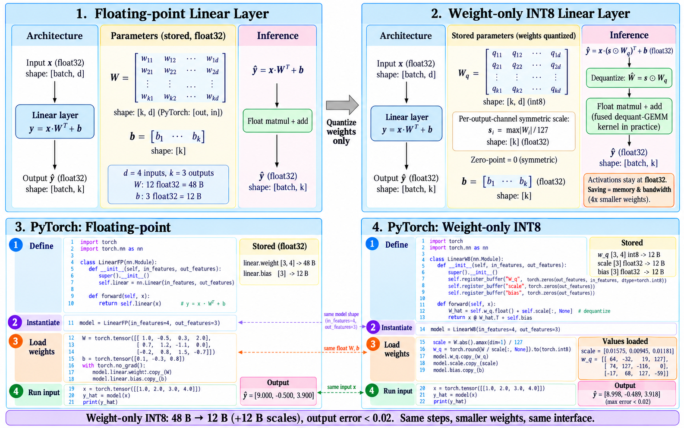
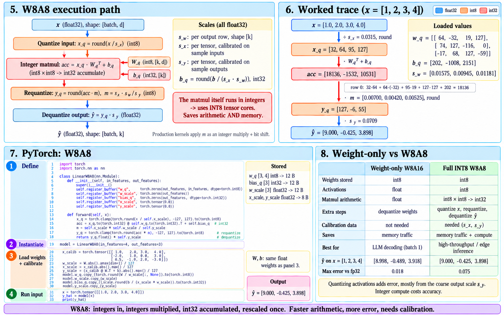

Quantization schemes and targets
Module thesis: Lecture 21/22 built the affine map \(r = S(q - Z)\) and decided how many values share one \((S, Z)\). Two more decisions fix a quantizer: where the grid sits (symmetric or asymmetric) and when its scale is computed (static or dynamic). Then comes the decision that sets the speedup: which tensors are quantized at all. Weights only saves memory traffic; weights and activations saves arithmetic as well.
Prerequisite: Affine quantization
1. Types of quantization
Every quantizer answers two independent questions:
| Question | Options | Fixed by |
|---|---|---|
| Where does the grid sit? | symmetric · asymmetric | the shape of the data |
| When is \(S\) computed? | static · dynamic | whether the data is known before inference |
1.1 Symmetric vs asymmetric
Asymmetric is the full affine map of Lecture 21/22 §1: fit the grid to \([r_{min}, r_{max}]\) and let \(Z\) land wherever Equation 2.7 puts it.
Symmetric pins \(Z = 0\) and centres the grid on real zero:
- int8 symmetric uses \([-127, 127]\). Dropping \(-128\) makes the grid a mirror image, so \(-r\) quantizes to exactly \(-q\).
- Fixed point (Lecture 19/20) is symmetric, with \(S\) forced to a power of two.
Worked example: data in [−1.0, 3.0], int8.
| Asymmetric | Symmetric | |
|---|---|---|
| \(S\) | \(4.0 / 255 = 0.0157\) | \(3.0 / 127 = 0.0236\) |
| \(Z\) | \(64\) | \(0\) |
| Integers used | all 256 | \(-42 \ldots 127\): 170 of 255 |
| Step size | 1× | 1.5× coarser |
Symmetric wastes the grid on the side the data never reaches. Post-ReLU activations in \([0, 6]\) use only \(0 \ldots 127\), so half the integers sit idle.
Asymmetric pays at runtime. Lecture 21/22 §4 showed that a nonzero \(Z_w\) adds the term \(Z_w \sum q_x\), an extra pass over every input.
| Symmetric | Asymmetric | |
|---|---|---|
| Grid use on skewed data | wastes up to half | full |
| Integer dot product | core term only | extra terms per input (Lecture 21/22 §4) |
| Typical target | weights: roughly zero-centred | activations after ReLU / GELU |
In practice
Most int8 GPU inference stacks quantize both weights and activations symmetrically: TensorRT supports only symmetric int8 [2]. The kernel stays a single multiply-accumulate loop. Asymmetric grids appear where the bit budget is tightest, such as 4-bit weight blocks.
1.2 Static vs dynamic
The scale for weights is always computed offline, because weights are known before inference. The choice applies to activations, which depend on the input.
| Static | Dynamic | |
|---|---|---|
| When \(S_x\) is computed | once, offline, on a calibration set | every forward pass, from the live tensor |
| Calibration data | required | none |
| Runtime cost | zero: \(S_x\) is a constant | one reduction (\(\max \lvert x \rvert\)) over the activations before each matmul |
| Out-of-range input | clipped to the calibrated range | cannot happen: the range is measured |
| Typical use | CNNs, edge accelerators | transformers, PyTorch quantize_dynamic [3] |
Calibration runs a few hundred representative inputs through the float model and records each activation's range. Min/max is the simplest rule; percentile and entropy rules [1] clip rare outliers to buy a finer step for everything else.
Transformers push towards dynamic. Activation ranges vary sharply from token to token, so one calibrated range is either too wide for most tokens or too narrow for some. Computing \(S_x\) per token at runtime tracks each row.
Same words, different meaning
Lecture 9/10 used static and dynamic for batching: when requests are grouped. Here they refer to scales: when \(S_x\) is computed. The two choices are independent.
2. Quantization targets: weights only, or weights and activations
A Linear layer stores weights, and receives activations at runtime. Quantizing only the first saves bytes; quantizing both changes the arithmetic.
2.1 Weight-only (W8A16)

- Stored:
w_qin int8, plus one symmetric scale per output row (Lecture 21/22 §5). - Computed: dequantize, then a float matmul. Production kernels fuse the dequantize into the GEMM, so float weights never reach memory.
- Calibration: none. Every scale comes from the weights themselves.
2.2 Weights and activations (W8A8)

- Computed: int8 × int8 → int32. This is Lecture 21/22 §4's core term, with every \(Z = 0\).
- Requantize: panel 5's \(m = s_x s_w / s_y\) is Lecture 21/22 §4's \(M\), applied once per output.
- Scales: \(s_x\) and \(s_y\) here are static and per-tensor (§1.2), so the layer needs calibration data.
2.3 Which one pays
Lecture 9/10 §4 placed decode at ~2 FLOP/byte, far below the ridge, and prefill well above it.
| Regime | Bottleneck | Weight-only | W8A8 |
|---|---|---|---|
| Decode, batch 1 | memory bandwidth | captures the win: bytes per token drop 2–4× | same bytes saved; the faster arithmetic sits idle |
| Prefill, large batch | compute | float matmul: no faster | int8 tensor cores: faster arithmetic |
Weight-only attacks the bytes; W8A8 attacks the FLOPs. Pick the target that matches the bottleneck.
Break the calibration
Panel 7 calibrates \(s_x = 4.0/127\) on three sample inputs. Feed the layer \(x = [2, 4, 6, 8]\).
- What is \(x_q\)?
- Which of §1.2's two schemes avoids the damage, and what does it cost per forward pass?
References
- Wu et al., Integer Quantization for Deep Learning Inference: Principles and Empirical Evaluation (NVIDIA, 2020) — symmetric vs asymmetric cost, static calibration with max, percentile and entropy rules
- NVIDIA, TensorRT Developer Guide — Working with Quantized Types — symmetric-only int8
- PyTorch, Quantization — dynamic quantization of Linear layers: int8 weights, activation scales computed per batch at runtime
- Lecture 21/22 — the affine map, the four-term dot product, the requantize multiplier \(M\), granularity
- Lecture 9/10 — prefill vs decode on the roofline